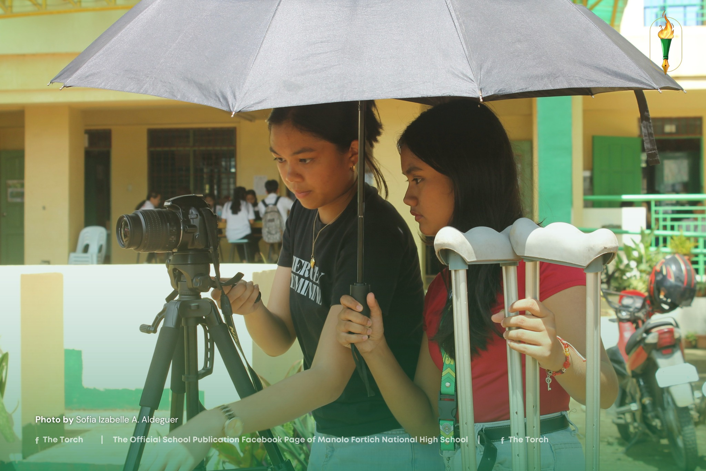

Spotless Jewels Shine at the 2024 Municipal Festival of Talents

Opening the doors of creativity and staging unique talents in all forms, spotless jewels from Manolo Fortich National High School (MFNHS) unleash their passion, skill, and creativity during the 2024 Municipal Festival of Talents (MFOT) last November 8, expressing their hearts of art to leave a lasting spark.
Read More
TEKNOLO-LIKHA: Tagisan ng Kasanayan at Talento
Mag-aaral sa MFNHS, nagtagisan ng galing at talento sa programming at pagbuo ng Robotics sa loob ng tatlong araw na patimpalak. Alinsunod sa Pagdiriwang ng Buwan ng Agham, ang School-based na kompetisyon ay isinagawa noong ika-18 hanggang ika-20 ng Septyembre, patungkol ito sa programing at robotics.
Read More
Sevilla, Cangke Pluck Gold in Billiards Tournament
Louwella G. Sevilla and Vic Julia Cangke ruled the nine and eight ball billiard category on Friday, October 18, 2024, at Gamay Billiards Hall during the Municipal Athletic Meet 2024, with their aim to participate in the Division Athletic Meet and bring home the bacon.
Read More
Celebrating Motherhood at Mrs. SPTA 2024 Pageant
Elegance, resilience, and the essence of motherhood took center stage last December 18 at the highly anticipated Mrs. SPTA 2024 pageant. Representing each grade level, the remarkable mothers graced the stage not only with their stunning gowns but also with heartfelt performances, inspiring stories, and unwavering confidence that left the audience in awe. Each step was a testament to the strength and beauty of motherhood—showcasing talent, intelligence, and the power to inspire unity within the school community.
Read More
Young Innovators Lead the Way at Science Fair 2024
Aspiring young scientists from 13 different schools in the Division of Bukidnon delve deep into Science, Technology, and Mathematics interests with projects spanning various fields during the 2024 Division Science and Technology Fair at Manolo Fortich National High School (MFNHS). The said fair is a celebration of the spirit of scientific inquiry and transforming innovative curiosities into impactful discoveries, highlighting the role of innovation in shaping the future with its young scientists pushing boundaries to make a difference.
Read More